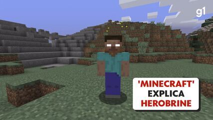

Domine a arte de craftar na web

Herobrine, a famosa lenda do Minecraft, não tem um "ano de nascimento" real, pois é um personagem fictício (uma creepypasta). No entanto, ele "nasceu" na comunidade de internet em agosto de 2010.
Origem: A história começou em 2010, em um fórum (4chan) e popularizou-se com um relato de um suposto encontro na versão Alfa do jogo. O Mito do Irmão de Notch: Uma versão popular dizia que Herobrine era o fantasma do irmão falecido de Markus "Notch" Persson, criador do Minecraft. No entanto, Notch afirmou nunca ter tido um irmão e que a história é falsa. Comportamento: Relatos descreviam tochas de redstone aparecendo, árvores sem folhas e a presença de uma figura na névoa. A "Remoção": A Mojang, desenvolvedora do jogo, brincou com a lenda durante anos, frequentemente incluindo a frase "Removed Herobrine" (Herobrine removido) nas notas de atualização, mesmo ele nunca tendo existido no código oficial. Realidade: Herobrine nunca foi real no jogo base. Ele existe apenas através de mods (modificações) criados pela comunidade.
O html é como os blocos do seu inventário. sem eles você não tem paredes, nem chão, nem teto
Missão: coloque as tags <h1> e <p> no mundo!
coletar recursosO CSS é o que define se o seu bloco será de madeira,diamante ou obsidiana. é o estilo
Missão Mude a cor e tamanho do seus blocos
Aplicar skin